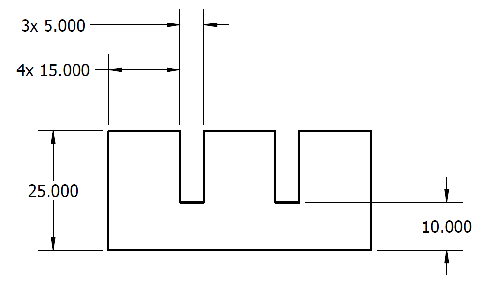
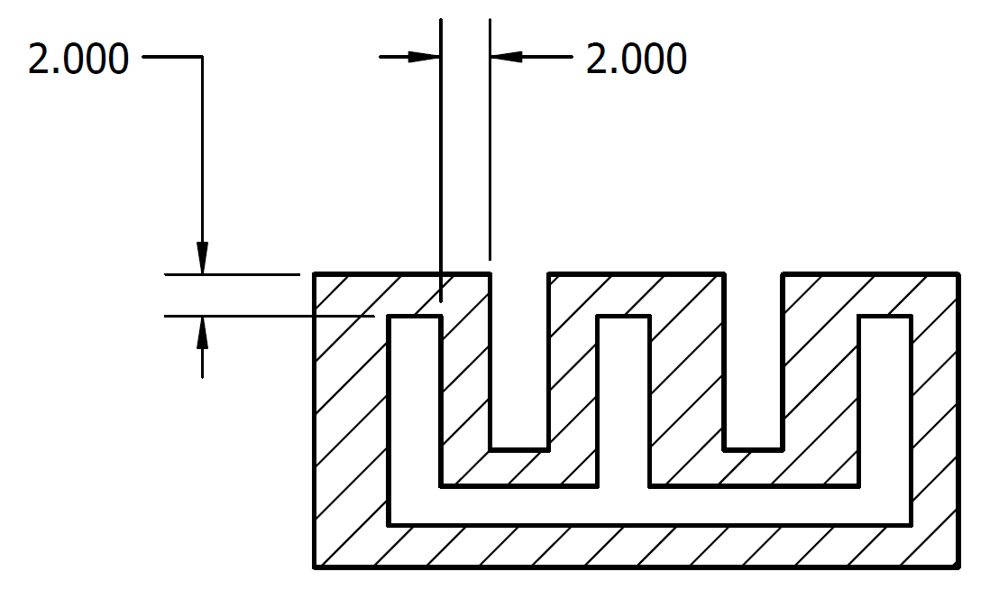

Design
A case study for testing GA's on soft robotic actuators.
The mechanical design for the soft robotic hand has been initiated in ABAQUS as importing part files from any other 3D CAD (like Solidworks) might have issues in ABAQUS. The design consisted of a base rectangle which is connected with 3 rectangle shaped fingers (4 fingers were our target, due to time constraints, 3 fingers were taken into consideration). The designed soft robotic hand has been shown below in Figure 3a. A base design for the robotic hand setup is drawn along with the dimensions shown in Figure 3b.
T represents the thickness of the material with a constant value of 2mm
H is the height of the actuator, ranging from 10mm to 25mm
FIG 3a: The designed 3 fingered robotic hand
FIG 3b: Dimensions for the 3 fingered robotic hand base design
After completing the outer cavity, the inner cavity created for air pressure was created with an initial thickness of 2mm and which has been depicted in figure 4a, and the specified 2D drawing with dimensions has been mentioned in Figure 4b.
FIG 4a: The inner design of 3 fingered robotic hand for air pressure flow
FIG 4b: The dimension for the inner design of 3 fingered robotic hand
In order to optimize the robotic hand, the design is created in such a way that there are control variables that will be randomized in order to check for the best possible solution through NSGA II. The control state variables were selected and figure 5 depicts the control variables for the design:
La represents the length of the actuator, which ranges from 40mm to 80mm
Lc represents the length of the chamber (Finger width) ranging from 8mm to 30mm
Lk represents the length between each finger, which depends on the length of the actuator and the chamber
FIG 5: control variables for the fitness functions for 3 fingered robotic hand